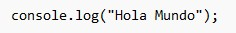

Lenguaje de Programación: JavaScript
Características principales
- Lenguaje interpretado, ligero y dinámico
- Orientado a objetos basado en prototipos
- Principalmente usado en desarrollo web (cliente y servidor)
- Alta integración con HTML y CSS
- Soporta programación asíncrona (con promesas y async/await)
- Ejecutado en el navegador y también en servidores con Node.js
- Tipado débil y dinámico
Tipos de datos
- Primitivos: number, string, boolean, null, undefined, bigint, symbol
- Objetos: object, arrays, funciones, fechas, expresiones regulares
- Especiales: NaN, Infinity
Ventajas
- Esencial para el desarrollo web moderno
- Gran compatibilidad con todos los navegadores
- Versátil: se usa en frontend, backend, móviles, IoT, etc.
- Amplio ecosistema (frameworks como React, Vue, Angular)
- Comunidad activa y gran cantidad de recursos
Desventajas
- Tipado débil puede causar errores difíciles de detectar
- Seguridad del lado cliente si no se controla bien
- Inconsistencias entre navegadores antiguos
- El código puede volverse difícil de mantener sin buenas prácticas
Codigo del ejemplo: "hola mundo"
